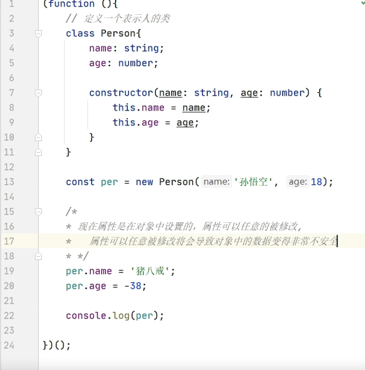
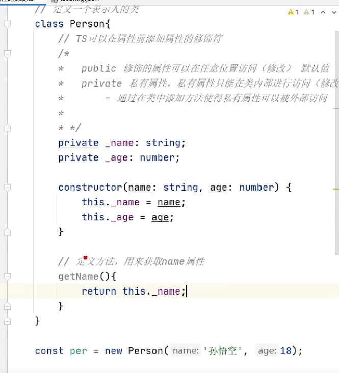
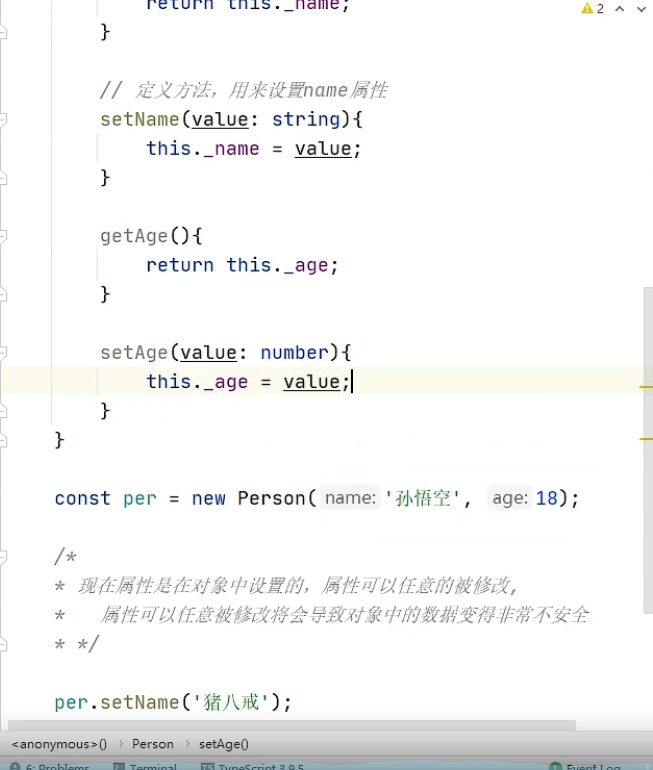
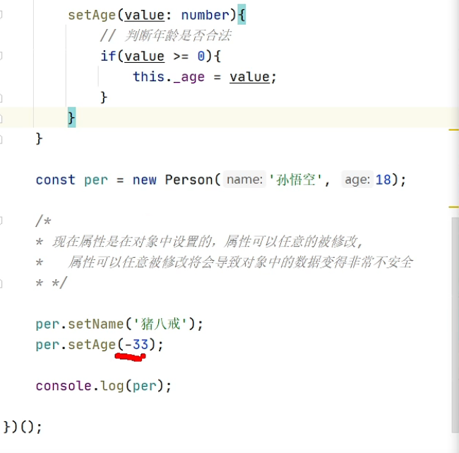
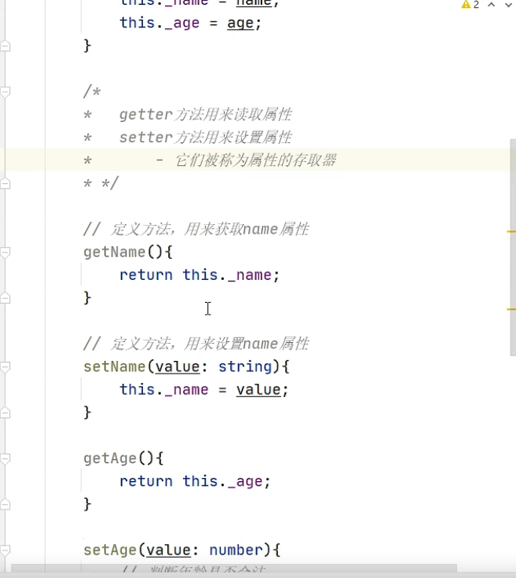
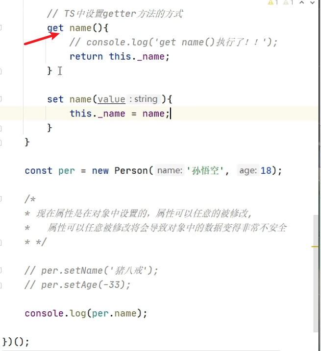
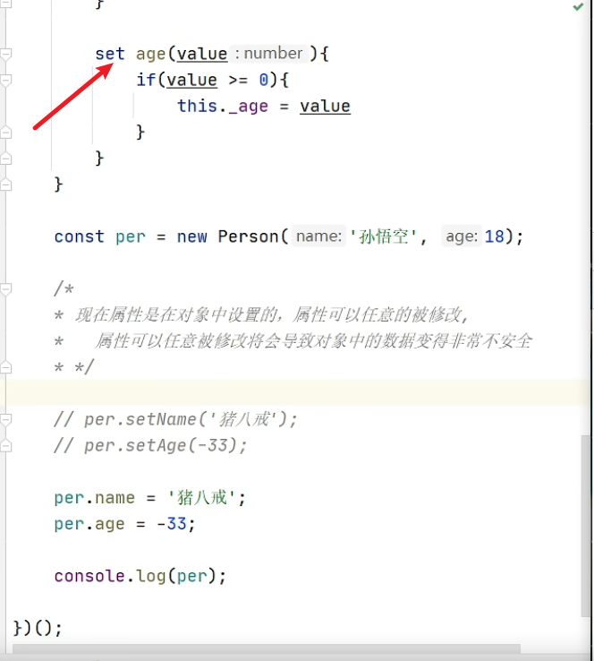
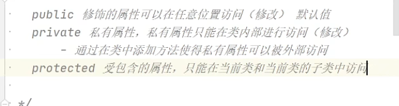
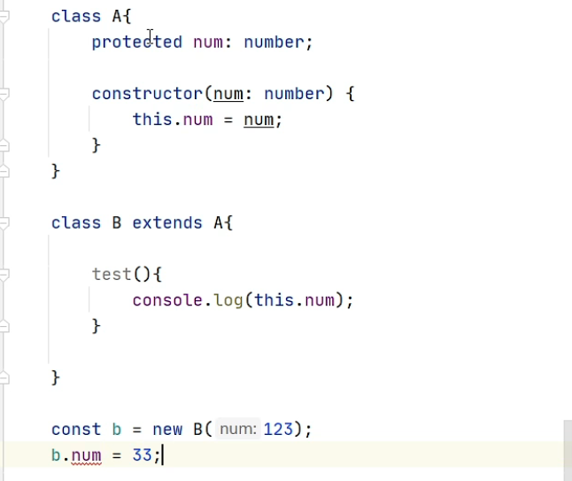
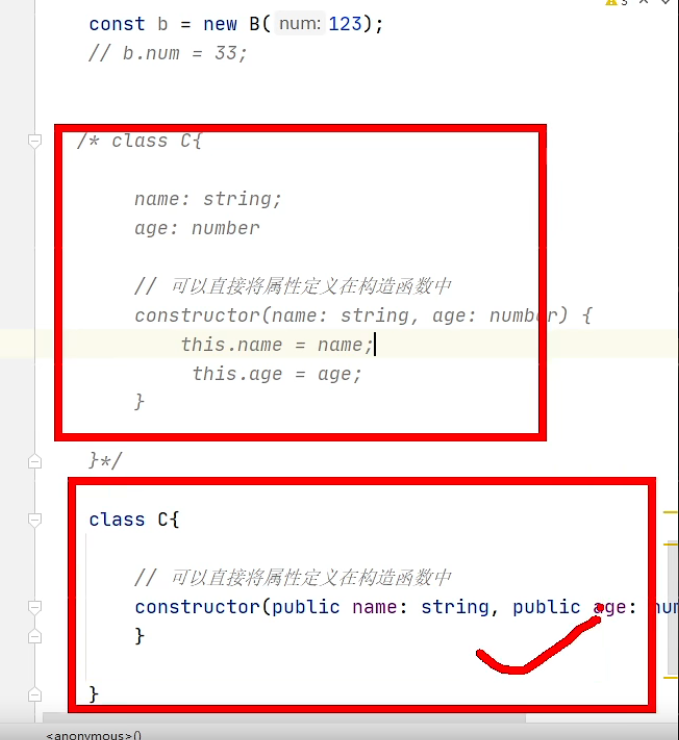

/assets/018.jpg)
# TypeScript
# 属性的封装










class Person{ | |
// public name: string | |
// private age: number | |
// protected gender: string | |
// constructor(name: string, age: number) { | |
// this.name = name | |
// this.age = age | |
// } | |
constructor(public name: string, private age: number, protected gender: string) { | |
this.name = name | |
this.age = age | |
} | |
getAge(age: number) { | |
this.age = age | |
} | |
get getName() { | |
return this.name | |
} | |
set setAge(value: number) { | |
if (value >= 0) { | |
this.age = value | |
} | |
} | |
} | |
const per = new Person('nmsl', 12, 'gg') | |
per.name = 'hhh' | |
per.getAge(12) | |
per.getName | |
per.setAge = 30 | |
class a extends Person{ | |
test() { | |
console.log(this.gender); | |
} | |
} |